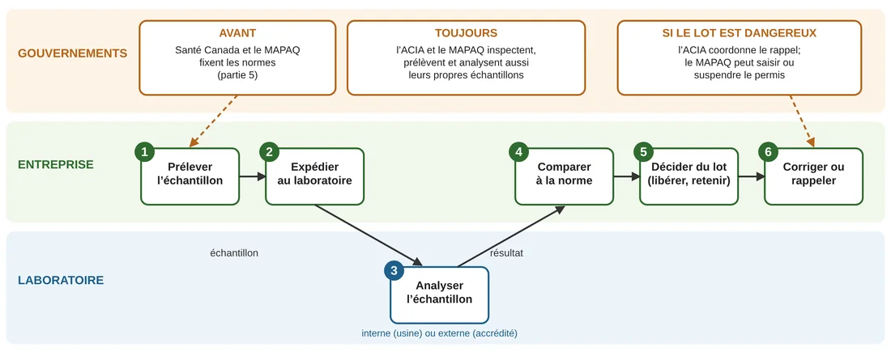
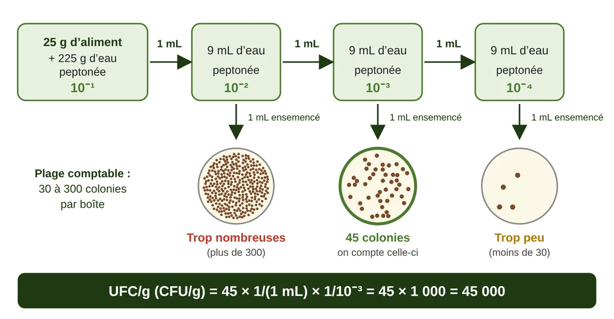
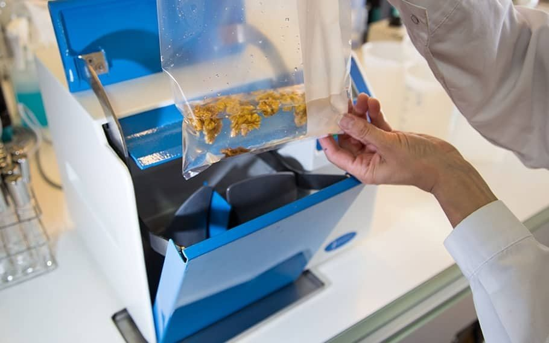
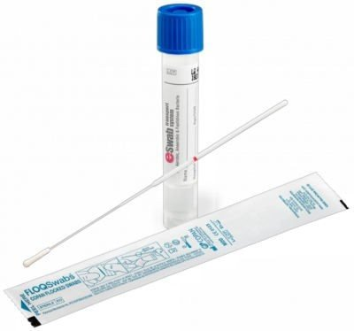
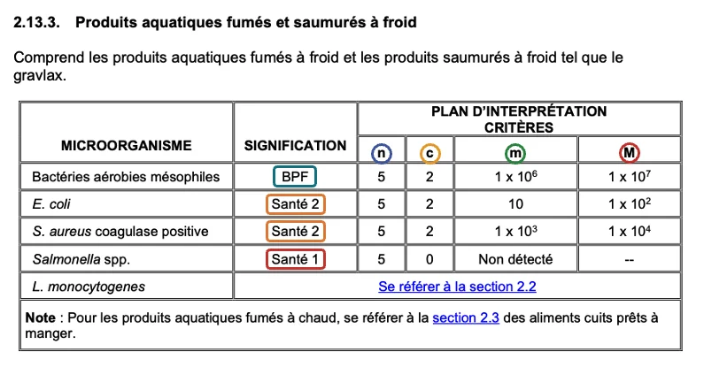

Document préparé à partir des diapositives du cours « La qualité » et de documents officiels du Québec et du Canada (liens dans le texte).
Comment utiliser ces notes — Dans les Cours 1 à 6, on a appris qui sont les microorganismes. Maintenant, on apprend comment une entreprise vérifie qu’ils ne rendent personne malade. L’idée est simple : on prélève un petit morceau de l’aliment (un échantillon), on l’analyse, puis on compare le résultat à une limite officielle (une norme). Les valeurs et les règles importantes sont dans ces notes, avec le document officiel d’où elles viennent : on peut les vérifier à la source. Les activités 7.1 (dangers, échantillon et prélèvement) et 7.2 (lire une norme) du site accompagnent ces notes.
Objectifs d’apprentissage proposés
- Expliquer pourquoi on analyse des échantillons d’aliments.
- Nommer les trois sortes de dangers.
- Décrire comment prélever un bon échantillon.
- Expliquer pourquoi il y a des normes.
- Expliquer comment on passe d’un nombre de colonies à un résultat en UFC/g (dilutions et calcul).
- Dire qui fait quoi, du prélèvement à la décision : l’entreprise, le laboratoire et les gouvernements.
- Expliquer ce qu’est une norme et où la trouver.
- Donner quelques valeurs officielles à connaître pour prélever un échantillon.
- Dire, pour les principaux microorganismes, quels aliments on prélève et quel critère officiel s’applique.
- Utiliser un document officiel pour vérifier une information.
PARTIE 1 — Pourquoi vérifier la qualité?
1.1 Un danger invisible
On ne peut pas voir, sentir ni goûter un aliment contaminé par la plupart des microorganismes dangereux. Il faut donc analyser. Le contrôle est devenu essentiel pour trois raisons :
- Les aliments passent par beaucoup d’étapes de transformation : plus d’occasions d’être contaminés.
- Il s’écoule plus de temps entre la production et la consommation : les microorganismes ont le temps de se multiplier (Cours 3 : la zone de danger).
- La loi l’exige : les entreprises et le gouvernement doivent pouvoir détecter les dangers de façon fiable.
1.2 Échantillon et échantillonnage
Un échantillon est un petit morceau d’aliment (ou d’eau, ou une trace sur une surface) qu’on envoie à l’analyse. L’échantillonnage est l’action de prélever cet échantillon. Son but : savoir si tout le lot (l’ensemble d’un même produit fabriqué) est sécuritaire avant de le vendre.
C’est comme goûter une cuillère de soupe pour savoir si toute la marmite est salée : ça marche seulement si la cuillère est bien représentative de la marmite.
À retenir — On analyse un petit échantillon pour juger tout un lot. L’échantillon doit donc être bien prélevé, sinon le résultat ne veut rien dire.
PARTIE 2 — Les trois sortes de dangers
Un danger est tout ce qui peut rendre un aliment dangereux pour la santé.
| Danger | Exemples |
|---|---|
| Biologique | Bactéries, virus, parasites, moisissures (Cours 3 à 6) |
| Chimique | Allergènes, produits de nettoyage, mycotoxines (toxines de certaines moisissures, Cours 5) |
| Physique | Morceaux de verre, de métal, de plastique ou d’os |
Dans ce cours, on s’occupe surtout du danger biologique : les microorganismes.
PARTIE 3 — Qui fait quoi, et quand?
Dans une usine, la vérification de la qualité suit une chaîne d’étapes, et chaque étape a un responsable. Voici la vue d’ensemble; les parties suivantes reprennent chaque étape.
3.1 Pourquoi il y a des normes
Un résultat de laboratoire seul ne veut rien dire : « 45 000 UFC/g », est-ce dangereux? Il faut une limite fixée avant l’analyse : une norme (ou critère). Elle sert à :
- protéger la santé : la limite est plus sévère quand les bactéries peuvent se multiplier dans l’aliment;
- appliquer la même règle à tous : entreprise, laboratoire et inspecteur lisent le résultat avec la même limite;
- agir tôt : un résultat près de la limite est un avertissement, avant que quelqu’un tombe malade.
Les normes sont détaillées à la partie 5.
3.2 La chaîne : du prélèvement à la décision

- Prélever l’échantillon (partie 4).
- Expédier au laboratoire, au froid et vite.
- Analyser avec une méthode standardisée (section 3.5).
- Comparer le résultat à la norme (partie 5).
- Décider du lot : le libérer, le retenir ou le refuser.
- Agir : corriger la cause et, si le lot est déjà vendu, le rappeler (Cours 8).
3.3 Qui fait quoi?
| Entreprise | Laboratoire | Gouvernements | |
|---|---|---|---|
| Prélever | Une personne formée de l’entreprise (souvent en assurance qualité). | Reçoit l’échantillon. | Des inspecteurs de l’ACIA ou du MAPAQ, souvent sans prévenir. |
| Analyser | Parfois un laboratoire dans l’usine (analyses de routine). | Un laboratoire externe accrédité (norme ISO/CEI 17025) : méthodes standardisées et rapport. | Laboratoires de l’ACIA, pour les échantillons officiels. |
| Comparer et décider | Compare à la norme, libère, retient ou refuse le lot, corrige. | Donne le résultat, pas la décision. | Pour ses échantillons : rappel, saisie, suspension de permis. |
| Règles | Les applique et le prouve (plan écrit, registres). | Applique ses méthodes. | Santé Canada (et le MAPAQ au Québec) fixent les normes; l’ACIA et le MAPAQ inspectent. |
La responsabilité revient d’abord à l’entreprise : au Canada, quiconque vend des aliments a la responsabilité de s’assurer qu’ils sont salubres (ACIA). Les gouvernements fixent les règles et vérifient; le laboratoire mesure; c’est l’entreprise qui décide du sort de ses lots.
En résumé : Santé Canada fixe les normes nationales; l’ACIA inspecte, analyse (échantillonnage) et coordonne les rappels; l’ASPC suit les éclosions; au Québec, le MAPAQ inspecte les établissements et peut suspendre un permis (inspection). Les entreprises visées suivent le Règlement sur la salubrité des aliments au Canada, qui exige un plan de contrôle préventif écrit.
3.4 Quand prélève-t-on?
- À la réception des matières premières.
- Pendant la fabrication, pour vérifier que le procédé (cuisson, refroidissement, nettoyage) fonctionne.
- Sur le produit fini, avant l’expédition.
- Dans l’environnement et l’eau, à intervalles réguliers.
- Après un problème : résultat hors limite, plainte, changement de fournisseur.
Exemple : dans une usine de charcuteries cuites, un technicien en assurance qualité prélève cinq échantillons et les envoie au laboratoire. Un résultat est de 2 000 000 UFC/g de bactéries aérobies, au-dessus de la limite maximale de 1 000 000 (partie 5) : l’entreprise refuse le lot, cherche la cause, corrige, puis prélève de nouveau.
3.5 Comment le laboratoire obtient un résultat : les dilutions et les UFC/g
Avant de voir comment le laboratoire compte les bactéries, regarde ce qui se passe quand les échantillons y arrivent : la réception et la lecture des échantillons (vidéo ci-dessus).
Un aliment très contaminé donnerait une boîte couverte de colonies, impossible à compter. On dilue donc l’échantillon, puis on ensemence : on dépose un volume connu sur un milieu de culture (une gélose, ou un Petrifilm, qui est une gélose prête à l’emploi). Après l’incubation, on compte les colonies.
Une dilution dit combien de fois l’aliment est dilué : 1 partie d’aliment pour N parties au total. Ainsi, 10⁻¹ = 1/10, 10⁻² = 1/100, 10⁻³ = 1/1 000 et 10⁻⁴ = 1/10 000. Par exemple, 10 g d’aliment dans 90 g d’eau, ou 25 g dans 225 g, font une dilution 10⁻¹; 1 g dans 99 g d’eau fait une dilution 10⁻².
Lire l’exposant : on divise, puis on multiplie
Écrire 10⁻¹, c’est une autre façon d’écrire 1/10, c’est-à-dire « divisé par 10 » : la dilution 10⁻¹ est dix fois moins concentrée que l’aliment de départ. L’exposant compte les divisions par 10 : 10⁻² = divisé par 10 deux fois, donc par 100; et ainsi de suite.
| Dilution | Écriture | Dans le tube | Pour retrouver l’aliment |
|---|---|---|---|
| 10⁻¹ | 1/10 | divisé par 10 | multiplier par 10 |
| 10⁻² | 1/100 | divisé par 100 | multiplier par 100 |
| 10⁻³ | 1/1 000 | divisé par 1 000 | multiplier par 1 000 |
| 10⁻⁴ | 1/10 000 | divisé par 10 000 | multiplier par 10 000 |
Le résultat doit décrire l’aliment, pas le tube. Comme on a divisé la concentration pour pouvoir compter, on fait le chemin inverse : on multiplie pour retrouver la concentration réelle. C’est ce que veut dire « × 1/dilution » dans la formule plus bas : 1/10⁻¹ = 10, 1/10⁻² = 100, 1/10⁻³ = 1 000.
Analogie : un verre de jus préparé avec 1 mesure de concentré et 9 mesures d’eau est dix fois plus faible que le concentré. Si le verre contient « 3 » de sucre, c’est que le concentré en contenait 30.
Vérification rapide : plus l’exposant est grand (10⁻⁴), plus on a dilué : il y a moins de colonies sur la boîte, mais on multiplie par un plus grand nombre. Et avec 1 mL ensemencé, le résultat en UFC/g est toujours plus grand que le nombre de colonies comptées. Si votre résultat est plus petit, vous avez divisé au lieu de multiplier.
- Diluer l’aliment : 25 g d’aliment dans 225 g d’eau peptonée stérile, puis on homogénéise. C’est la dilution 10⁻¹.
- Diluer en série : avec un embout stérile, on transfère 1 mL dans un tube de 9 mL d’eau peptonée et on homogénéise. On refait le transfert du tube obtenu vers le tube suivant, avec un nouvel embout chaque fois, pour ne pas contaminer le tube suivant. Chaque tube est dix fois moins concentré que le précédent : 10⁻², 10⁻³, 10⁻⁴.
- Ensemencer un volume connu de plusieurs dilutions, en double : 1 mL sur un Petrifilm, ou 0,1 mL sur une gélose (étalé en surface, ou déposé dans la boîte puis recouvert de gélose liquide).
- Incuber selon la méthode.
- Compter les boîtes qui ont entre 30 et 300 colonies : en dessous de 30, le compte est trop incertain; au-dessus de 300, les colonies se touchent et on note « >300 » (on utilise alors une dilution plus forte).

Une UFC (unité formatrice de colonie; CFU en anglais) est une colonie visible, qui vient d’une cellule ou d’un petit groupe de cellules. Le résultat se calcule ainsi :
UFC/g (CFU/g) = moyenne des colonies × 1/(volume ensemencé, en mL) × 1/dilution
Dans la figure, la dilution 10⁻³ a 45 colonies et on a ensemencé 1 mL : 45 × 1/1 × 1/10⁻³ = 45 × 1 000 = 45 000 UFC/g. Avec 0,1 mL ensemencé, les mêmes 45 colonies donneraient 450 000 UFC/g : le volume ensemencé compte dans le calcul. Si deux boîtes de la même dilution ont 40 et 60 colonies, on utilise la moyenne : 50.
Pourquoi des UFC par gramme, et non par mL? Parce qu’on veut connaître l’aliment, même si on a ensemencé 1 mL de liquide : l’eau de dilution n’est qu’un outil, et on remonte au gramme d’aliment grâce à la dilution. Ce chiffre se compare ensuite à la norme (partie 5).
Toutes les analyses ne comptent pas des colonies : la méthode du NPP (nombre le plus probable) utilise des tubes de milieu liquide, et pour Salmonella et Listeria on cherche seulement la présence ou l’absence (Cours 8).
À retenir — L’entreprise prélève, interprète et décide; le laboratoire dilue, compte et rapporte en UFC/g; les gouvernements fixent les règles et vérifient.
PARTIE 4 — Prélever un échantillon
4.1 Que prélève-t-on, et où?
On prélève à trois endroits :
- Dans les aliments : matières premières, produits en cours de fabrication, produits finis.
- Dans l’eau : l’eau du robinet ou du puits qui sert à la fabrication.
- Dans l’environnement : surfaces, équipements, planchers. On passe un écouvillon (un long coton-tige stérile) sur la surface.

Pourquoi l’environnement? Certains microorganismes, comme Listeria, s’installent dans l’usine et survivent même au froid (Cours 3). Si on trouve Listeria sur une surface, on peut agir avant qu’elle contamine l’aliment.
4.2 Les cinq règles d’or du prélèvement
- Au hasard. On ne choisit pas seulement le plus beau produit : l’échantillon doit représenter le lot.
- Se protéger et protéger l’échantillon. Se laver les mains et porter l’équipement de protection (gants, etc.).
- Matériel stérile. On n’ouvre le contenant qu’au moment d’y mettre l’échantillon, puis on le referme aussitôt (technique aseptique, comme au laboratoire).
- Étiqueter. À l’encre indélébile, pour ne jamais confondre deux échantillons.
- Garder au froid et aller vite. Sinon les microorganismes se multiplient (ou meurent) et l’échantillon ne représente plus le produit.

4.3 Les chiffres à connaître (guide du MAPAQ)
Le guide officiel du MAPAQ (version 2022) précise comment appliquer les cinq règles. Voici l’essentiel :
- Quantité : au moins 250 g (ou 250 ml). Pour un produit en vrac, on prend ces 250 g à environ cinq endroits du lot.
- Froid : les produits fragiles sont réfrigérés tout de suite (entre 0 °C et 4 °C pour le lait cru). Un produit congelé reste congelé, ou à 6 °C ou moins s’il se décongèle.
- Délai : l’échantillon doit arriver au laboratoire dans les 36 heures. Après ce délai, le laboratoire peut faire l’analyse, mais le résultat ne peut pas servir à des activités légales.
- Étiquette : à l’encre indélébile, avec au minimum le numéro de la demande d’analyse et le numéro de prélèvement. L’étiquette de prélèvement légale ajoute le produit, le propriétaire, la date et la signature de la personne autorisée.
- Surfaces : un écouvillon couvre 50 cm²; une éponge peut couvrir jusqu’à 1 m². On ne touche jamais l’éponge ni l’intérieur du sac stérile.
Prélever de l’eau à un robinet, dans l’ordre :
- Retirer les accessoires du bec (aérateur, grillage, boyau).
- Nettoyer le bec à l’alcool, à l’intérieur et à l’extérieur.
- Vaporiser de l’alcool 70 % sur le bec, puis attendre 10 minutes.
- Laisser couler l’eau 5 minutes, à débit constant, sans éclaboussures.
- Remplir une bouteille stérile contenant du thiosulfate de sodium (il neutralise le désinfectant qui reste dans l’eau), en laissant au moins 2,5 cm d’air sous le bouchon et sans toucher le goulot ni le bouchon.
- Refermer hermétiquement.
4.4 Pour vérifier à la source
Toutes ces valeurs viennent du guide officiel du MAPAQ : Techniques de prélèvement des échantillons pour l’analyse microbiologique des aliments et de l’eau. On peut l’ouvrir pour les retrouver. C’est ce que propose l’activité 7.1.
PARTIE 5 — Les normes
5.1 Où se trouvent les normes?
Les normes sont écrites dans des documents officiels, accessibles à tous :
- Le Tableau des critères microbiologiques pour les aliments, publié par Santé Canada.
- Les Lignes directrices et normes pour l’interprétation des résultats analytiques en microbiologie alimentaire, publiées par le MAPAQ, qui servent à interpréter les résultats au Québec.
Qui applique ces normes? Voir la section 3.3.
5.2 Qu’est-ce qu’une norme?
Une norme (ou critère) est une limite de microorganismes permise dans un aliment. On compare le résultat de l’analyse à cette limite. Un résultat peut être :
- acceptable : sous la limite, tout va bien;
- médiocre : entre une limite basse et une limite maximale; toléré en petit nombre, mais c’est un avertissement;
- inacceptable : au-dessus de la limite maximale; le lot est refusé.
Comme on analyse cinq échantillons d’un même lot, la décision porte sur tout le lot : un seul résultat inacceptable suffit pour refuser le lot. Le nombre d’échantillons « médiocres » permis dépend du produit (par exemple 2 sur 5 pour les fromages, 1 sur 5 pour le fromage cottage).
La norme dit aussi à quel point le danger est grave :
- Santé 1 : danger qui peut causer la mort (exemple : Salmonella). La tolérance est zéro.
- Santé 2 : danger moins grave pour la santé; une petite quantité peut être tolérée.
- BPF (bonnes pratiques de fabrication) : le résultat montre si l’hygiène est bonne.
- Altération : le résultat montre si l’aliment va se gâter (qualité, pas santé).
Dans les lignes directrices du MAPAQ, on trouve par exemple :
- Santé 1 : Salmonella, les E. coli producteurs de shigatoxines (dont O157:H7), et les toxines de S. aureus, de C. botulinum et du groupe B. cereus.
- Santé 2 : E. coli (en général), S. aureus, B. cereus, C. perfringens.
- BPF : les bactéries aérobies, les coliformes totaux (eau, glace, produits laitiers), et les levures et moisissures dans les jus pasteurisés.
- Altération : les bactéries lactiques (charcuteries cuites), et les levures et moisissures dans les jus frais.
Pour Listeria, un résultat positif déclenche la procédure d’intervention décrite à la section 2.2 des lignes directrices.
À retenir — Innocuité n’est pas fraîcheur. Une norme garantit qu’un aliment est sécuritaire, pas qu’il est frais : un aliment peut respecter la norme et avoir perdu du goût ou de la texture. C’est pourquoi les entreprises s’imposent souvent des limites plus strictes que la loi.
5.3 Un cas concret : Listeria
Pour illustrer ce cas, regarde la vidéo « Listeria monocytogenes, persistance et virulence dans les abattoirs » (ci-dessus).
Santé Canada a une politique sur Listeria dans les aliments prêts à manger (2023). Elle vise les fabricants et les importateurs d’aliments prêts à manger vendus au Canada; elle ne vise pas les restaurants ni les détaillants qui vendent directement aux consommateurs (la Loi sur les aliments et drogues s’applique quand même). Elle classe les aliments selon que Listeria peut ou non se multiplier dedans :
- Catégorie 1 : Listeria peut se multiplier pendant la durée de conservation (charcuteries, fromages à pâte molle, saucisses à hot-dog). Règle très stricte : on analyse 5 échantillons de 25 g, et si Listeria est détectée dans les 125 g, il faut intervenir (risque 1, priorité élevée).
- Catégories 2A et 2B : Listeria ne peut pas se multiplier, ou seulement jusqu’à 100 UFC/g (2A : certains aliments non chauffés ou réfrigérés 5 jours ou moins, comme des légumes coupés; 2B : crème glacée, fromage à pâte dure, fruits congelés). Règle moins stricte : on intervient si on compte plus de 100 UFC/g (risque 2).
- Si on ne sait pas dans quelle catégorie ranger un aliment, on le traite comme la catégorie 1. Pour les aliments destinés aux personnes vulnérables, la règle stricte s’applique toujours.
Plus la bactérie peut se multiplier dans l’aliment, plus la règle est sévère. On reconnaît les facteurs du Cours 3 : pH, activité de l’eau, température.
La politique insiste aussi sur l’échantillonnage de l’environnement : surfaces, équipements, zones où l’aliment est exposé avant l’emballage. Listeria peut s’installer dans l’usine et y persister longtemps. Un résultat positif sur une surface indique que le nettoyage ou la désinfection n’a pas suffi et demande d’agir : intensifier le nettoyage, analyser aussi le produit fini, revoir le système de salubrité. Le tableau détaillé est sur la page des mesures de contrôle de la politique.
5.4 Des exemples de critères officiels
Pour lire un critère, il faut connaître deux abréviations : UFC (unité formatrice de colonie : une colonie visible sur la gélose, qui vient d’un ou de quelques microorganismes) et NPP (nombre le plus probable : une estimation statistique du nombre de bactéries). Chaque critère donne une limite basse (acceptable en dessous) et une limite maximale (inacceptable au-dessus); entre les deux, le résultat est médiocre.
Le Tableau des critères microbiologiques de Santé Canada ne couvre que cinq groupes :
| Aliment | Microorganisme | Critère |
|---|---|---|
| Poudres de lait, produits du cacao, du chocolat et des œufs, cuisses de grenouilles | Salmonella | Absence dans 25 g (zéro toléré) |
| Fromage fait avec du lait pasteurisé | E. coli | Limite basse 100 NPP/g; maximale 2 000 NPP/g (lait non pasteurisé : basse 500) |
| Fromage fait avec du lait pasteurisé | S. aureus | Limite basse 100 UFC/g; maximale 10 000 UFC/g (lait non pasteurisé : basse 1 000) |
| Fromage cottage, crème glacée | Coliformes | Limite basse 10 NPP/g; maximale 1 000 NPP/g |
| Crème glacée | Bactéries aérobies (numération des colonies aérobies) | Limite basse 100 000 UFC/g; maximale 1 000 000 UFC/g |
| Eau en contenants scellés | Coliformes; bactéries aérobies | Coliformes : moins de 1,8 NPP/100 ml (maximale 10). Aérobies : basse 100 UFC/ml; maximale 10 000 UFC/ml |
Les lignes directrices du MAPAQ (6e édition, 2019) donnent des exemples pour d’autres produits. Voici le tableau 2.13.3, pour les produits aquatiques fumés et saumurés à froid (saumon fumé, par exemple) :

Comment lire ce tableau (les valeurs sont en UFC/g) :
- n : le nombre d’échantillons analysés dans le lot (ici 5).
- c : le nombre d’échantillons « médiocres » permis, c’est-à-dire entre la limite basse et la limite maximale.
- m : la limite basse (acceptable en dessous). M : la limite maximale (inacceptable au-dessus).
- Signification : le type de critère (Santé 1, Santé 2, BPF ou Altération).
- Non détecté : on ne tolère aucun microorganisme dans la quantité analysée.
- Listeria : le tableau renvoie à la section 2.2 des lignes directrices (procédure d’intervention).
Exemple avec E. coli : on analyse 5 échantillons. Au plus 2 peuvent se situer entre 10 et 100 UFC/g (médiocres), et aucun ne peut dépasser 100 UFC/g. Un seul échantillon à 150 UFC/g suffit pour refuser le lot.
Pour les aliments cuits prêts à manger : les bactéries aérobies (sans produits crus) ont une limite basse de 100 000 UFC/g et maximale de 1 000 000 UFC/g (BPF); E. coli, limite basse 10 et maximale 100 UFC/g; S. aureus, 1 000 et 10 000 UFC/g; B. cereus et C. perfringens, 1 000 et 10 000 UFC/g. Salmonella doit être non détectée dans certains aliments, comme les œufs, les légumes coupés et les produits aquatiques fumés. Pour les jus, les levures et moisissures ont une limite maximale de 100 000 UFC/ml (jus frais, altération) ou de 1 000 UFC/ml (jus pasteurisé, BPF).
PARTIE 6 — Les critères selon le microorganisme
Voici, pour chacun des principaux microorganismes d’intérêt alimentaire (Cours 3) : quels aliments on prélève et quel critère officiel s’applique. Les valeurs sont celles de la section 5.4; les liens mènent aux documents d’où elles viennent.
| Groupe | Aliments typiques à prélever | Critère officiel qui s’applique |
|---|---|---|
Bactéries lactiques |
Yogourt, fromages, charcuteries, légumes fermentés. | Altération Pas de danger pour la santé. Selon le MAPAQ : altération. Exemple : charcuterie cuite, limite maximale de 10 000 000 UFC/g. Lignes directrices du MAPAQ |
Bactéries acétiques |
Vinaigre; boissons alcoolisées et kombucha qui se gâtent. | Norme interne Aucun critère officiel dans les documents de Santé Canada ni du MAPAQ : norme interne de l’entreprise. |
Pseudomonas |
Viandes, poissons, produits laitiers et légumes réfrigérés. | BPFAltération Aucun critère officiel propre à ce groupe. On suit leur effet avec le dénombrement des bactéries aérobies (BPF ou altération) et la durée de conservation. |
Entérobactéries |
Viandes, volailles, œufs, produits laitiers non pasteurisés. | BPF Le MAPAQ n’a pas de critère pour le groupe lui-même; on compte surtout les coliformes : limite basse 10 NPP/g et maximale 1 000 NPP/g (fromage cottage, crème glacée, Santé Canada); coliformes totaux = BPF selon le MAPAQ. Tableau de Santé Canada |
Salmonella |
Volailles, œufs, viandes hachées, légumes coupés, poudres de lait, cacao. | Santé 1 Santé 1 : non détectée (zéro toléré). Absence dans 25 g (Santé Canada : poudres de lait, cacao, chocolat, produits d’œufs; MAPAQ : œufs, légumes coupés, produits aquatiques fumés). Fiche de l’Agence de la santé publique |
E. coli |
Viandes hachées, lait cru, fromages. | Santé 2Santé 1 E. coli en général : Santé 2 (aliments cuits prêts à manger : 100 UFC/g au maximum; fromage pasteurisé : basse 100 et maximale 2 000 NPP/g). Les E. coli producteurs de shigatoxines (dont O157:H7) sont Santé 1 : non détectés. Tableau II du MAPAQ |
Staphylococcus aureus |
Produits crémeux, salades mixtes, charcuteries, fromages. | Santé 2 Santé 2 : aliments cuits prêts à manger, 10 000 UFC/g au maximum; fromage pasteurisé : basse 100 et maximale 10 000 UFC/g. Fiche de l’Agence de la santé publique |
Listeria monocytogenes |
Charcuteries, poissons fumés, fromages à pâte molle; surfaces de l’usine. | Intervention Selon le MAPAQ, un résultat positif déclenche la procédure d’intervention. Santé Canada : catégorie 1, détectée dans 125 g = on intervient; catégories 2A et 2B, plus de 100 UFC/g. Politique sur Listeria (Santé Canada) |
Clostridium botulinum |
Conserves mal chauffées, aliments sous vide, miel. | Santé 1 Pas de critère de dénombrement : la toxine est un danger de type Santé 1, qu’on contrôle par le procédé (chaleur, pH). Pour les conserves, on vérifie la stérilité commerciale. Guide sur le botulisme (Santé Canada) |
Clostridium perfringens |
Plats de viande en sauce, ragoûts refroidis lentement. | Santé 2 Santé 2 : aliments cuits prêts à manger, 10 000 UFC/g au maximum. Fiche de l’Agence de la santé publique |
Bacillus cereus |
Riz et pâtes cuits, plats refroidis lentement. | Santé 2 Santé 2 : aliments cuits prêts à manger, 10 000 UFC/g au maximum. Fiche de l’Agence de la santé publique |
Levures |
Bière, vin, pain, yogourts aux fruits; jus et aliments acides ou sucrés. | BPFAltération Pas de critère de Santé Canada. Selon le MAPAQ : jus pasteurisé = BPF (maximale 1 000 UFC/ml); jus frais = altération (maximale 100 000 UFC/ml). Lignes directrices du MAPAQ |
Moisissures |
Fruits, légumes, pain; fromages bleus (affinage voulu). | BPFAltération Mêmes critères que les levures pour les jus. Danger chimique possible : certaines produisent des mycotoxines. Toxines naturelles (Santé Canada) |
À retenir — Le tableau de critères de Santé Canada ne couvre que cinq groupes (Salmonella, E. coli, S. aureus, coliformes et bactéries aérobies, surtout pour les produits laitiers, le cacao et l’eau). Pour les autres, on utilise les lignes directrices du MAPAQ, la politique sur Listeria ou d’autres documents. Savoir dire « il n’y a pas de critère officiel pour ce groupe, et voici ce qui sert à la place » est une bonne réponse.
Vocabulaire clé
Échantillon, échantillonnage, lot, représentatif, danger (biologique, chimique, physique), écouvillon, technique aseptique, étiquetage, laboratoire homologué, norme (critère), lot, accrédité, limite basse, limite maximale, acceptable, médiocre, inacceptable, Santé 1, Santé 2, BPF, Altération, innocuité, dilution, ensemencer, UFC, NPP, aliment prêt à manger, Santé Canada, ACIA, ASPC, MAPAQ, plan de contrôle préventif.
Fin des notes de cours — Cours 7.